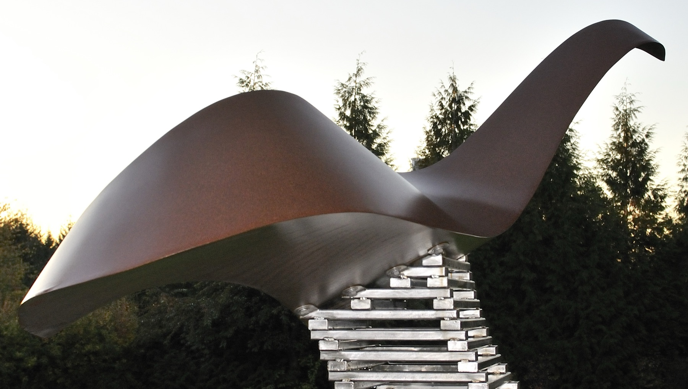
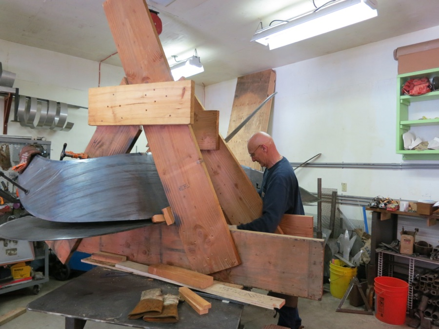
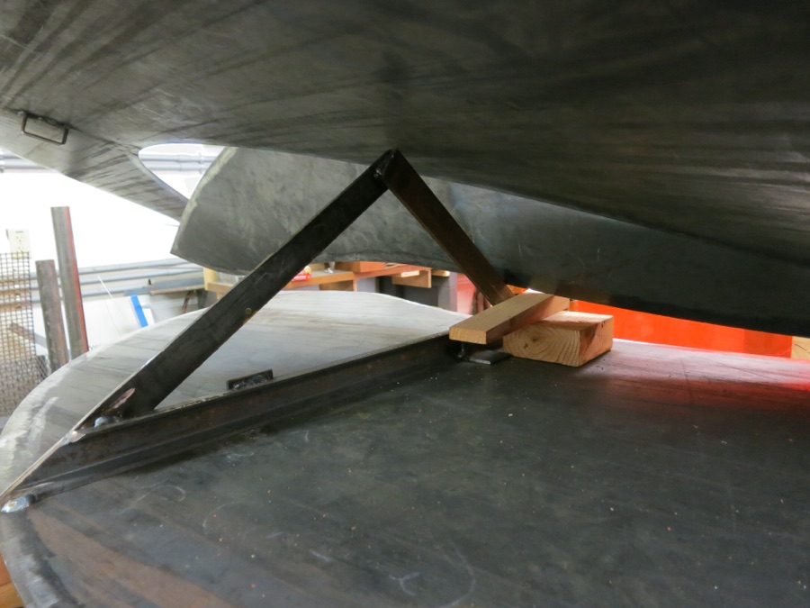
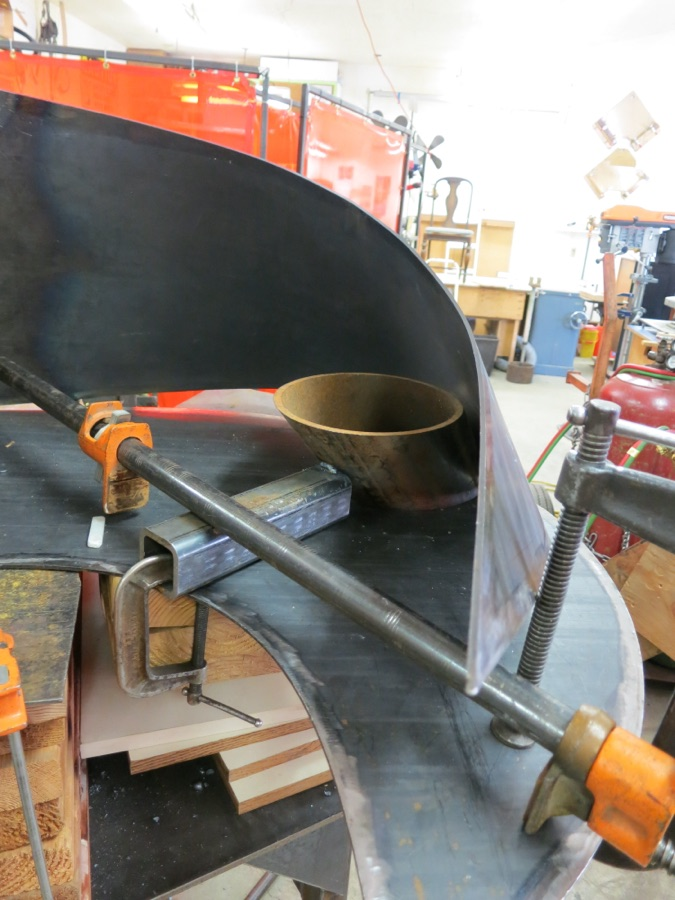

Marianas
Corten and stainless-steel · 2013
In a private collection

More views
{kind=link}
{kind=link}
{kind=link}
{kind=link}
{kind=link}
{kind=link}
Marianas is an undulating form that seems to swim through space, suggesting an unknown creature from the depths of the Mariana Trench. The sculpture grew from elements first developed for a public commission and was ultimately reworked into a different self-contained composition. Three sheets of Corten steel were brought together into one sinuous curving volume using great clamping force and occasional heat. This effort took place inch by inch working all edges simultaneously until they could be held together with small welded tacks along their full lengths. Finally, each edge was fully welded and ground to a smooth line. The Corten form was then set upon a stainless-steel base designed to imply a rising wave. This sculpture requires the viewer to move around it to truly appreciate its form.



Marianas in the Studio 19 photographs from the making of this piece →